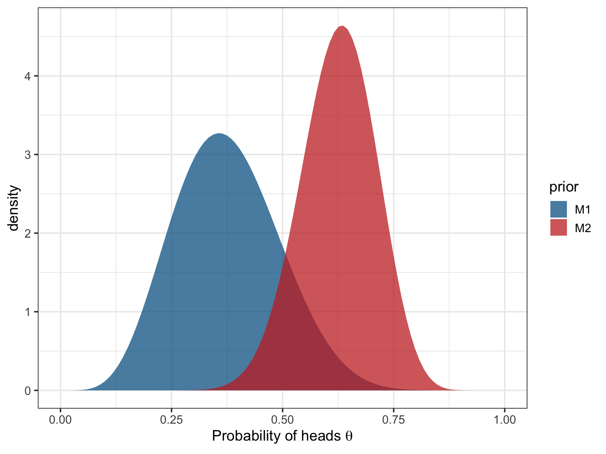

Model comparison
Statisticians love coins. Why? These toy examples are extremely useful to illustrate difficult concepts while still being expressible in a convenient mathematical framework. As an example, let’s say we want to estimate the bias \(\theta\) of a coin (i.e., its probability of landing heads up).
We compare two models of the bias \(\theta\), these two models differing only by their prior on \(\theta\). For instance, I could bet with a friend that the coin is probably biased toward tails (i.e., that the coin would, on average, lands more often tails up than heads up), while my friend rather think that the coin is biased toward heads. While we think that the coin is probably slightly biased, neither of us is completely certain of the exact value of this bias. Fortunately, probability theory gives us a way to express our prediction (as well as our uncertainty) in the form of a probability distribution.
For convenience, we can write our predictions as two beta-binomial models (check this previous blogpost to know why a beta prior is a convenient choice for the coin example):
\[ \begin{align} \mathcal{M_{1}} : y_{i} &\sim \mathrm{Binomial}(n, \theta) \\ \theta &\sim \mathrm{Beta}(6, 10) \\ \end{align} \]
\[ \begin{align} \mathcal{M_{2}} : y_{i} &\sim \mathrm{Binomial}(n, \theta) \\ \theta &\sim \mathrm{Beta}(20, 12) \\ \end{align} \]
Where \(\mathcal{M_{1}}\) represents my predictions about \(\theta\) while \(\mathcal{M_{2}}\) represents the predictions of my friend. As usual, these two priors are better understood visually:
My prior (in blue) is centered on \(\frac{\alpha}{\alpha + \beta} = 0.375\) while the prior of my friend (in red) is centered on \(\frac{\alpha}{\alpha + \beta} = 0.625\). Note that my friend seems a bit more certain of its prediction than me, as the red prior is a bit more narrow than the blue prior.
Now we can collect some data to test our respective hypotheses. We launch the coin 100 times and gather the following data:
[1] 0 0 1 1 1 1 1 1 1 1 0 0 0 1 0 1 1 0 1 0 1 0 0 1 1 0 0 1 0 1 0 1 0 0 1 1 0
[38] 0 0 0 0 1 0 0 0 0 0 0 0 1 0 1 1 0 1 1 1 1 0 1 1 0 1 0 1 1 0 1 0 1 1 1 0 0
[75] 0 1 1 1 0 0 0 1 1 1 0 0 0 0 0 0 0 1 0 0 1 0 1 0 1 1Then, we would like to know under which hypothesis (i.e., under which prior assumption) these data are the more probable to appear. To answer this question, we can compare the marginal likehoods of the two above models.
Bayes factors
Formally, the Bayes factor is defined as a ratio of marginal likelihoods and is given by:
\[ \text{BF}_{12} = \dfrac{p(D|H_{1})}{p(D|H_{2})} = \dfrac{\int p(\theta|H_{1}) p(D|\theta,H_{1}) \text{d}\theta}{\int p(\theta|H_{2}) p(D|\theta,H_{2}) \text{d}\theta} = \dfrac{\int \mathrm{Binomial}(n, \theta)\mathrm{Beta}(6, 10)\text{d}\theta}{\int \mathrm{Binomial}(n, \theta)\mathrm{Beta}(20, 12) \text{d}\theta} \]
In other words, computing a Bayes factor is equivalent to multiplying the prior by the likelihood (the information contained in the data) for each possible value of \(\theta\), summing all of the obtained values1, doing this for each model, and taking the ratio of these sums. This process is illustrated below.

We can read this animation starting by the lower left panel and going clockwise until the lower right panel. In the first panel (the lower left panel), the black curve represents the likelihood function of \(\theta\), that indicates how likely the data are to appear for a given value of \(\theta\). The two coloured curves represent the prior of either I (in blue) or my friend (in red).
The moving dots represent the density of either the priors or the likelihood at each possible value of \(\theta\)2. The unnormalised posterior density (displayed in the upper left panel) is constructed by multiplying the probability assigned by the prior (the “height” of the blue/red dot) to the probability assigned by the likelihood function (the “height” of the black dot) for each possible value of \(\theta\).
We can then “unfold” this density by computing its cumulative function (in the upper right panel). This curve simply represents the value of the unnormalised posterior for each value of \(\theta\), to which we added the value of the unnormalised posterior for all the previous values of \(\theta\) (by summing them). For instance, the value of the cumulative unnormalised posterior at \(\theta = 0.14\) is equal to the value of the unnormalised posterior at \(\theta = 0.14\), plus the value of the unnormalised posterior at all the previous values of \(\theta\) between \(0\) and \(0.14\).
The Bayes factor (see the lower right panel) is then computed as the ratio of the cumulative unnormalised posterior at the upper limit of the interval of integration.
Let’s say it again. The Bayes factor is the ratio of the cumulative unnormalised posterior at the upper limit of the interval of integration. In our case, it corresponds to the ratio of the heights of the cumulative distributions when \(\theta = 1\) (i.e., approximately 8 divided by 3). The resulting Bayes factor of 2.68 means that the data are 2.68 times more likely under my prior than under the prior of my friend.
They are not posterior odds
Be careful to not interpret Bayes factors as posterior odds. Writing Bayes’ rule in the “odds form” (see below) lets us realise that Bayes factors indicate how much we whould update our prior odds, in the light of new incoming data. They do not indicate what is the most probable hypothesis, given the data (unless the prior odds are 1:1).
Let’s take another example and compare two hypotheses:
- \(H_{0}\): there is no such thing as precognition.
- \(H_{1}\): precognition does exist.
We run an experiment and observe a \(BF_{10} = 27\). What is the posterior probability of H1? We can compute this probability by multiplying the Bayes factor to the prior odds of the two hypotheses. How to define the prior odds is a tricky question and this choice should be open to scrutiny and criticism. Here I use an arbitrary relatively skeptical prior of 1:1000 against H1.
\[ \underbrace{\dfrac{p(H_{1}|D)}{p(H_{0}|D)}}_{posterior\ odds} = \underbrace{\dfrac{27}{1}}_{Bayes\ factor} \times \underbrace{\dfrac{1}{1000}}_{prior\ odds} = \dfrac{27}{1000} = 0.027 \]
This result demonstrates that a relatively high Bayes factor (representing some relatively strong evidence) should always be considered in the light of what was knew before the data comes in. A priori highly improbable claims can still remain highly improbable, even after having been corroborated by the data.
Conclusions
Bayes factors are increasingly used in psychology. Unfortunately, this does not warrant increased understanding of what they are. This blogpost aims to illustrate and summarise what they are and how they can be interpreted as updating factors.
This post was greatly inspired by a series of blogposts from Alexander Etz and Jeff Rouder (see references below). I also thank Fabian Dablander for providing valuable feedback on an earlier version of this post.
References
Click to expand
Etz, A. (2015, August 9). Understanding Bayes: Visualization of the Bayes Factor [Blog post]. Retrieved from https://alexanderetz.com/2015/08/09/understanding-bayes-visualization-of-bf/
Etz, A. (2015, April 15). Understanding Bayes: A Look at the Likelihood [Blog post]. Retrieved from https://alexanderetz.com/2015/04/15/understanding-bayes-a-look-at-the-likelihood/
Rouder, J. (2016, January 24). Roll Your Own: How to Compute Bayes Factors For Your Priors [Blog post]. Retrieved from http://jeffrouder.blogspot.be/2016/01/what-priors-should-i-use-part-i.html
Footnotes
Citation
BibTeX citation:
@online{nalborczyk2018,
author = {Nalborczyk, Ladislas},
title = {What Does a {Bayes} Factor Look Like?},
date = {2018-05-22},
url = {https://lnalborczyk.github.io/blog/2018-04-30-bf},
langid = {en}
}
For attribution, please cite this work as:
Nalborczyk, L. (2018, May 22). What does a Bayes factor look
like? https://lnalborczyk.github.io/blog/2018-04-30-bf